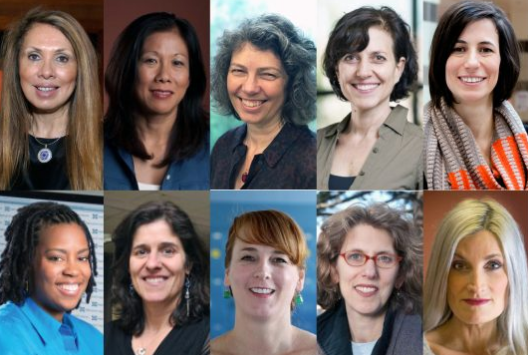
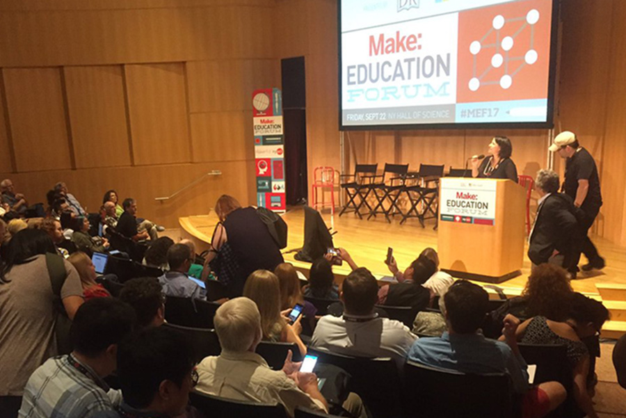

An artist by training, Dr. Peppler is a Professor of Informatics and Professor of Education at University of California, Irvine, where she engages in research that focuses on the design of new technologies to support learning and participation within traditionally minoritized populations, particularly at the intersection of the arts and STEM learning ecosystems.
Dr. Peppler earned an NSF early CAREER award for her work on how e-textiles and other computational construction kits popularized through the Maker movement can deepen learning and broaden participation across a range of STEM fields. Dr. Peppler's studies have been published in leading journals in the fields of education, technology and the arts, including Science Education; Computers & Human Behavior; Mind, Culture & Activity; British Journal of Educational Technology; Journal of Science and Educational Technology; Studies in Arts Education; Review of Research in Education; Teachers College Record; and Learning, Media & Technology, among many others. Additionally, Dr. Peppler is the author or editor of over 10 books published by a range of outlets, including MIT Press, Peter Lang, Routledge, SAGE Publications, and Teachers College Press.
Through this work, Dr. Peppler has received several awards, including the Mira Tech Educator of the Year, Indiana Governor's Award for Tomorrow's Leaders, American Society for Engineering Education (ASEE) Pre-College Engineering Education Division Best Paper Award, One of 20 nominated for SIGCSE Top Ten Papers of All Time Award, Outstanding Junior Faculty Award from Indiana University, and Outstanding Alumni Early Career Award from Psychological and Brain Studies at Indiana University. Her work has been consistently supported by the National Science Foundation as well as a range of foundations, federal and industry partners, including the Gordon and Betty Moore Foundation, the Spencer Foundation, the Wallace Foundation, Google.org, Wellcome Trust, US Department of Education, Boeing, Indiana Department of Education, New York Community Trust, Chicago Community Trust, Best Buy, Fossil Foundation, GAP Inc., National Geographic, as well as the Center for Craft, Creativity, and Design.
Dr. Peppler sits on the Editorial Boards for the International Journal for Computer Supported Collaborative Learning and Computer Science Education and has recently served as Guest Editor for the British Journal of Educational Technology and Sustainability. Dr. Peppler was also the lead editor of the two-volume SAGE Encyclopedia of Out-of-School Learning.
Media Features

Watchworthy Wednesday
Kylie Peppler is one of 10 Women Championing Connected Learning, honored
during Women's History Month by Digital Media + Learning. Follow the link to DML Central to
see her video and those of her distinguished
colleagues!
UCI School of
Education: Interview with Informatics Professor Kylie
Peppler
Kylie Peppler sits down with Dean Richard Arum to share her views on connected learning, the
intersection of new technology and the arts, and maker culture.
Talks
Dr. Peppler shares the latest research findings regularly, with over 100 refereed talks at conferences, such as the American Educational Research Association (AERA), Computer Supported Collaborative Learning (CSCL), International Conference of the Learning Sciences (ICLS), Connected Learning Summit (CLS), and others, in addition to over 130 invited talks around the world. Dr. Peppler has given over 15 keynote presentations--including those at the NSF CyberLearning Synthesis and Envisioning Meeting, American Library Association, FabLearn Conference, Make:Education Forum, Harvard/MIT Learning and the Brain Conference, among others--and has been invited to give presentations at several distinguished national meetings, such as speaking at the Consortium for Schools Networking (CoSN), Smithsonian, White House Champions for Computer Science, Carnegie Foundation for the Advancement of Teaching, National Academies and was the Distinguished Lecturer at the National Science Foundation on her work on new collaborative design technologies.
Research Interests
For a sortable list of work related to my research interests, please see the publications section of this website.
Education
- 2007–2008: Postdoctoral Research Associate — University of
California, Irvine
- Uncovering Literacies, Disrupting Stereotypes: Media Arts Practices of Youth with (Dis)Abilities
- Supervisor: Mark Warschauer
- 2007: Ph.D. in Education — University of California, Los Angeles
- Dissertation: Creative Bytes: Literacy and Learning in the Media Arts Practices of Urban Youth
- Committee: James Catterall, Yasmin Kafai, Ernest Morrell, and C.E.B. Reas
- 2002: B.A. — Indiana University, Bloomington
- Psychology, French, and Studio Art
Academic Appointments
Professor: Informatics and Education
University of California, Irvine
Associate Professor: Informatics and Education
University of California, Irvine
Associate Professor: Learning Sciences
Indiana University, Bloomington
Assistant Professor: Learning Sciences
Indiana University, Bloomington
UC Presidential Postdoctoral Fellow
University of California, Irvine
Graduate Student Researcher
UCLA
Publications
Filter publications by research type:
|
|
|
|---|
2023
- Blikstein, P., Davis, R., Rosenbaum, L., Zheng, Y., Bender, S., Halverson, E., Keune, A., Martin, L., Peppler, K., Thomas Murphy, C., Vossoughi, S., Worsley, M., Yankova, N., & Hooper, P. (2023). The future of maker education. Proceedings of the 17th International Conference of the Learning Sciences - ICLS 2023 (pp. 1650-1658). Montreal, Canada: International Society of the Learning Sciences.
- Cawelti, L., Dahn, M., Peppler, K., Adesida, T., Cuéllar, N., Livas, M., Meryhew, N., & Sikkema, S. (2023). “Let’s Go; We’re Writing a Song”: Co-Creating Auditory and Placial Space in an Afterschool Music Program. Proceedings of the 17th International Conference of the Learning Sciences - ICLS 2023 (pp. 1774-1775). Montreal, Canada: International Society of the Learning Sciences.
- Cawelti, L., Peppler, K. (2023). Navigating Tensions: Dominant Traditions and Culturally Sustaining Practices in Music Learning. Proceedings of the 17th International Conference of the Learning Sciences - ICLS 2023 (pp. 1993-1994). Montreal, Canada: International Society of the Learning Sciences.
- Chew, P., Peppler, K., DiGiacomo, D. K., Nelligan, P., Mejias, S., Sefton-Green, J. (2023). Relational connective tissue: A case study of freedom of movement in culinary learning. Proceedings of the 17th International Conference of the Learning Sciences - ICLS 2023 (pp. 218-225). Montreal, Canada: International Society of the Learning Sciences.
- Dahn, M., Peppler, K., & Ito, M. (2023). “We hear everyday, ‘This isn’t me.’” Translating interests toward STEM through entrepreneurial making. Frontiers, 7(2), 1-6. https://doi.org/10.3389/feduc.2022.1033742.
- DiGiacomo, D. K., Chew, P., Peppler, K., Nelligan, P. & Mejias, S. (2023). The interdependence of identity, belonging, and learning: Evidence from an out-of-school arts life-course study. Proceedings of the 17th International Conference of the Learning Sciences - ICLS 2023 (pp. 894-897). Montreal, Canada: International Society of the Learning Sciences.
- Fishman, B., Herrenkohl, L., Pinkard, N., Taylor, K., Cederquist, S., Gu, X., Jones, D., Lee, J., Lee, L., Majors, Y., Reid, C., Samuelson, A., Henriquez, A., Penuel W., & Peppler, K. (2023). Out-of-School Time: Divergent Learning, Divergent Opportunities. Proceedings of the 17th International Conference of the Learning Sciences - ICLS 2023 (pp. 1585-1592). Montreal, Canada: International Society of the Learning Sciences.
- Huang, J., Cawelti, L., & Peppler, K. (2023). Exploring algorithm building through designing and making kinetic sculpture. Proceedings of the 17th International Conference of the Learning Sciences - ICLS 2023 (pp. 1494-1497). Montreal, Canada: International Society of the Learning Sciences.
- Kumar, V., Fields, D., Blikstein, P., Peppler, K. Dahn., M., Ito, M., Braaten, M., Hayden, R., Roque, R., Chang, M. A., Philip, T., Worsley, M., Pinkard, N. (2023). Expansive Lenses to Examine Interventions (of) Moving Across Contexts. Proceedings of the 17th International Conference of the Learning Sciences - ICLS 2023 (pp. 1732-1743). Montreal, Canada: International Society of the Learning Sciences.
- Ojeda-Ramírez, S., Cawelti, L., Huang, J., & Peppler, K. (2023). Tools dictate the divide: entrenched gendered practices in the making of kinetic sculptures. Proceedings of the 17th International Conference of the Learning Sciences - ICLS 2023 (pp. 1964-1965). Montreal, Canada: International Society of the Learning Sciences.
- Ojeda-Ramírez, S., Sedas, M., & Peppler, K. (2023). Community Cultural Wealth in LatinoFuturism: Leveraging Speculative Fiction for STEM + Arts Asset-Based Pedagogies. Proceedings of the 17th International Conference of the Learning Sciences - ICLS 2023 (pp. 1442-1445). Montreal, Canada: International Society of the Learning Sciences.
- Peppler, K., Bender, S., Phonethibsavads, T., & Yankova, N. (2023). Lights up! Assessing standards-based performance skills in drama education. Studies in Educational Evaluation.
- Peppler, K., Dahn, M., & Ito, M. (2023). The Connected Arts Learning Framework: An expanded view of the purposes and possibilities for arts learning. The Wallace Foundation.
- Peppler, K., Huang, J., Richey, M., Ginda, M., Börner, K., Quinlan, H., & Hart, J. (2023). Learning at Work: Visual Learning Analytics to Upskill Aerospace Engineers in Advanced Manufacturing. Proceedings of the 17th International Conference of the Learning Sciences - ICLS 2023 (pp. 1900-1901). Montreal, Canada: International Society of the Learning Sciences.
- Peppler, K. & Huang, J. (2023). Visual Learning Analytics to Upskill Aerospace Engineers in Advanced Manufacturing. In P. Blikstein, J. V. Aalst, R. Kizito, K. Brennan (Eds.) 17th International Conference of the Learning Sciences (ICLS) (pp. 1900-1902). Montreal, Canada: International Society of the Learning Sciences.
- Peppler, K., Keune, A., Bender, S., & Yankova, N. (2023). Theorizing mathematical unitizing through fiber crafts. Proceedings of the 17th International Conference of the Learning Sciences - ICLS 2023 (pp. 966-969). Montreal, Canada: International Society of the Learning Sciences.
- Peppler, K., Sedas, M., & Thompson, N. (2023). Paper Circuits vs. Breadboards: Materializing Learners’ Powerful Ideas Around Circuitry and Layout Design. Journal of Science Education and Technology, 32, 469–492 (2023).
- Saxena, P., Keune, A., Thompson, N., & Peppler, K. (2023). To Quilt is to Math: Investigating the Breadth and Depth of Mathematics in Fiber Crafts. Proceedings of the 17th International Conference of the Learning Sciences - ICLS 2023 (pp. 178-185). Montreal, Canada: International Society of the Learning Sciences.
- Speer, S., Huang, J., Yankova, N., Rose, C., Peppler, K., & Orta-Martinez, M. (2023). RoboLoom: Collaboratively re-crafting CS education. In J. D. Slotta & E., Charles (Eds.) 3rd Annual Meeting of the International Society of the Learning Sciences (ISLS) Annual Meeting 2023 (pp. 31-34). Montreal, Canada: International Society of the Learning Sciences.
- Vitiello, R., Huang, J., Speer, S., Yankova, N., Peppler, K., Orta-Martinez, M., & Rose, C. (2023). Studying interdisciplinary collaboration as a core skill. In C. Damșa, M. Borge, E. Koh, & M. Worsley (Eds.) 16th International Conference on Computer-Supported Collaborative Learning (CSCL) H(pp. 378-379). Montreal, Canada: International Society of the Learning Sciences.
- Yankova, N., Huang, J., Vitiello, R., Speer, S., Orta-Martinez, M., Rose, C., Peppler, K. (2023). "Where is the Z-axis?": Negotiating understanding of servo rotation through gestures and tools. Proceedings of the 17th International Conference of the Learning Sciences - ICLS 2023 (pp. 1254-1257). Montreal, Canada: International Society of the Learning Sciences.
- Zhu, Z., Liu, Z., Zhang Y., Zhu, L., Huang, J., Villanueva, A., Qian, X., Peppler, K., Ramani, K. (2023). LearnIoTVR: An End-to-end Virtual Reality Environment Providing Authentic Learning Experiences for Internet of Things. The ACM CHI Conference on Human Factors in Computing Systems 2023.
2022
- Dahn, M., Cawelti, L., Schindler, E., & Peppler, K. (2022). Designing for connected arts learning through culturally sustaining practices. In: J. Oshima, T. Mochizuki, & Y. Hayashi (Eds.) International Collaboration toward Educational Innovation for All: International Society of the Learning Sciences (ISLS) Annual Meeting 2022 (pp. 1946-1947). Hiroshima, Japan: International Society of the Learning Sciences.
- Han, A., Huang, J., Villanueva, A. M., Peppler, K. A., Liu, Z., Zhu, Z., & Ramani, K.(2022). Coding a MacGuffin: Recommendations for Teaching Narrative-based IoT Design. In Proceedings of the 2022 AERA.
- Han, A., Keune, A., Huang, J., & Peppler, K., (2022). Visualizing Family Engagement in Museum Settings. In: J. Oshima, T. Mochizuki, & Y. Hayashi (Eds.) International Collaboration toward Educational Innovation for All: International Society of the Learning Sciences (ISLS) Annual Meeting 2022 (pp. 1904 - 1905). Hiroshima, Japan: International Society of the Learning Sciences.
- Huang, J., Han, A., Sedas, M., Telfer-Radzat, K., & Peppler, K., (2022). Crafting paper circuits: Gendered materials for circuitry learning. In J. Oshima, T. Mochizuki, & Y. Hayashi (Eds.) International Collaboration toward Educational Innovation for All: International Society of the Learning Sciences (ISLS) Annual Meeting 2022 (pp. 1293 - 1296). Hiroshima, Japan: International Society of the Learning Sciences.
- Ipsita, A., Erickson, L., Dong, Y., Huang, J., Bushinski, A. K., Saradhi, S., Vilanueva, M. A., Peppler, K., Redick, S. T., Ramani, K. (2022). Towards modeling of virtual reality welding simulators to promote accessible and scalable training. The ACM CHI Conference on Human Factors in Computing Systems 2022. https://doi.org/10.1145/3491102.3517696.
- Keune, A., Peppler, K. and Dahn, M. (2022). Connected portfolios: open assessment practices for maker communities. Information and Learning Sciences, Vol. 123 No. 7/8, pp. 462-481. https://doi.org/10.1108/ILS-03-2022-0029.
- Keune, A., Ruiz-Cabello, P., Peppler, K., Chappell, K., & Rowsell, J. (2022). Mapping Posthuman Methodological Innovation in the Study of Learning. In: J. Oshima, T. Mochizuki, & Y. Hayashi (Eds.) International Collaboration toward Educational Innovation for All: International Society of the Learning Sciences (ISLS) Annual Meeting 2022 (pp.113-116). Hiroshima, Japan: International Society of the Learning Sciences.
- Keune, A., Yankova, N., & Peppler, K. (2022). #Quiltsforpulse: Connected and shared production-centered socio-political activism through craftivism. Learning, Media and Technology, 47(2), 251-267. https://doi.org/10.1080/17439884.2021.1961147.
- Peppler, K. (2022). Makerspaces: Supporting Creativity and Innovation by Design. In J. A. Pluck (Ed.), Creativity and Innovation: Theory, Research, and Practice (pp. 265-273). Routledge. https://doi.org/10.4324/9781003233923.
- Peppler, K., Dahn, M., & Ito, M. (2022). Connected Arts Learning: Cultivating Equity Through Connected and Creative Educational Experiences. Review of Research in Education, 46(1), 264–287. https://doi.org/10.3102/0091732X221084322.
- Peppler, K., Keune, A., Thompson, N., & Saxena, P. (2022). Craftland is mathland: Mathematical insight and the generative role of fiber crafts in Maker Education. Frontiers in Education, 7. https://doi.org/10.3389/feduc.2022.1029175.
- Schindler, E., Peppler, K. (2022). Teachers Noticing Student Interest: A Micro-interactional Foundation for Interest-driven Learning. In: J. Oshima, T. Mochizuki, & Y. Hayashi (Eds.) International Collaboration toward Educational Innovation for All: International Society of the Learning Sciences (ISLS) Annual Meeting 2022 (pp. 2010 - 2011). Hiroshima, Japan: International Society of the Learning Sciences.
- Yankova, N., Dahn, M., Peppler, K., Lee, J., Montgomery, A., Moser, S., & Sikkema, S. (2022). “Keeping them with us”: Constructing equitable online spaces for the theatre classroom. In: J. Oshima, T. Mochizuki, & Y. Hayashi (Eds.) International Collaboration toward Educational Innovation for All: International Society of the Learning Sciences (ISLS) Annual Meeting 2022 (pp. 2138 - 2139). Hiroshima, Japan: International Society of the Learning Sciences.
2021
- Dahn, M., Yankova, N., Peppler, K., Lee, J., Montgomery, A., Sikkema, S., & Spilberg, J. (2021). Learning to be Open: Expansive Family Networks and Emotional Support as Connection Pathways. In de Vries, E., Hod, Y., & Ahn, J. (Eds.), Proceedings of the 15th International Conference of the Learning Sciences - ICLS 2021. (pp. 901-902). Bochum, Germany: International Society of the Learning Sciences.
- Dahn, M., Yankova, N., Peppler, K., Sikkema, S., Spilberg, J., Lee, J. (2021). “Way more relevant and a little less theoretical”: How teaching artists designed for online learning in a pandemic. Learning, Media, and Technology, 47(4), 456-470. https://doi.org/10.1080/17439884.2021.2012801.
- Keune, A., Yankova, N., & Peppler, K. (2021). Crafting Human-Material Collaborative Learning Processes and Technology Advances. In Hmelo-Silver, C. E., De Wever, B., & Oshima, J. (Eds.), Proceedings of the 14th International Conference on Computer-Supported Collaborative Learning - CSCL 2021 (pp. 193-196). Bochum, Germany: International Society of the Learning Sciences.
- Keune, A., Zambrano-Gutiérrez, J., Phonethibsavads, A., & Peppler, K. (2021). The Unexamined Influence: An Object’s Perceived Gender on Spatial Reasoning Skills in Girls. In de Vries, E., Hod, Y., & Ahn, J. (Eds.), Proceedings of the 15th International Conference of the Learning Sciences - ICLS 2021. (pp. 629-632). Bochum, Germany: International Society of the Learning Sciences.
- Law, N., Zhang, J., & Peppler, K. (2021). Sustainability and Scalability of CSCL Innovations. In U. Cress, J. Oshima, C. Rosé, & A. Wise (Eds.), International handbook of computer-supported collaborative learning (pp. 121–141). Berlin: Springer https://doi.org/10.1007/978-3-030-65291-3_7.
- Letourneau, S. M., Bennett, D. T., Liu, C., Argudo, Y., Peppler, K., Keune, A., Dahn, M., & Culp, K. M. (2021). Observing Empathy in Informal Engineering Activities with Girls Ages 7–14. Journal of Pre-College Engineering Education Research, 11(2), 120–128. https://doi.org/10.7771/2157-9288.135.
- Letourneau, S. M., Bennett, D. T., Liu, C., Argudo, Y., Peppler, K., Keune, A., Dahn, M., & Culp, K. M. (2021). Observing Empathy in Informal Engineering Activities with Girls Ages 7–14. Proceedings of the Annual American Society of Engineering Education Conference & Exhibition (ASEE), Long Beach, CA, United States.
- Mejias, S., Thompson, N., Sedas, R. M., Rosin, M., Wong, J., Price, N., Roche, J., Hurley, M., Peppler, K., Soep, L., Bevan, B., & Bell, P. (2021). The trouble with steam and why we use it anyway. Science Education, 105(2), 209–231. https://doi.org/10.1002/sce.21605.
- Peppler, K. (2021). Afterword: Dwelling on Making. In C. McLean & J. Rowell (Eds.) Maker Literacies and Maker Identities in the digital age: Learning and playing through modes and media (pp. 206-208). Routledge.
- Peppler, K., Davis-Soylu, H.J., Dahn, M. (2021). Artifact-oriented learning: A theoretical review of the impact of the Arts on Learning. Arts Education Policy Review, 1–17. https://doi.org/10.1080/10632913.2021.1925609.
- Peppler, K., Keune, A., Dahn, M., Bennet, D., Letournau, S. M. (2021). Designing for others: the roles of narrative and empathy in supporting girls’ engineering engagement. Information and Learning Sciences, 123(3/4), 129–153. https://doi.org/10.1108/ILS-07-2021-0061.
- Peppler, K., Keune, A. and Han, A. (2021). Cultivating data visualization literacy in museums. Information and Learning Sciences, 122(1/2), 1–16. https://doi.org/10.1108/ILS-04-2020-0132.
- Saxena, P., Sedas, R. M., & Peppler, K. (2021). Design thinking and the learning sciences: Theoretical, practical, and empirical perspectives. Oxford University Press. https://www.oxfordbibliographies.com/view/document/obo-9780199756810/obo-9780199756810-0267.xml.
- Sedas, R. M., Peppler, K., & Thompson, N. (2021). Breadboards and Paper Circuits: Differences in Advanced Circuitry Learning and PCB Layout Design. In de Vries, E., Hod, Y., & Ahn, J. (Eds.), Proceedings of the 15th International Conference of the Learning Sciences - ICLS 2021. (pp. 1149-1150). Bochum, Germany: International Society of the Learning Sciences.
- Sikkema, S., Lee, J., Spilberg, J., Dahn, M., Yankova, N., Peppler, K. (2021). How the arts can unlocka closed curriculum. Phi Delta Kappan, 102(8), 20–25. https://doi.org/10.1177/00317217211013932.
- Villanueva, A., Liu, Z., Kitaguchi, Y., Zhu, Z., Peppler, K., Redick, T., Ramani, K. (2021). Towards modeling of human skilling for electrical circuitry using augmented reality applications. International Journal of Educational Technology in Higher Education, 18(1). https://doi.org/10.1186/s41239-021-00268-9.
- Villanueva, A., Liu, Z., Zhu, Z., Du, X., Huang, J., Peppler, K., Ramani, K. (2021). RobotAR: An augmented reality compatible teleconsulting robotics toolkit for augmented makerspaces experiences. The ACM CHI Conference on Human Factors in Computing Systems 2021. https://doi.org/10.1145/3411764.3445726.
2020
- Glenn, T., Ipsita, A., Carithers, C., Peppler K., Ramani, K. (2020). StoryMakAR: Bringing Stories to Life with an Augmented Reality & Physical Prototyping Toolkit for Youth. CHI 2020.
- Ito, M., Arum, R., Conley, D., Guttiérez, K., Kirshner, B., Livingstone, S., Michalchik, V., Penuel, W., Peppler, K., Pinkard, N., Rhodes, J., Tekinbaş, K., Schor, J., Sefton-Green, J., Watkins, S. C. (2020). The Connected Learning Research Network: Reflections on a Decade of Engaged Scholarship. Published by the Connected Learning Alliance. Irvine, CA. February 2020. ISBN-13: 978-0-9887255-6-0.
- Keune, A. & Peppler, K., (2020). Computing in fabric: Exploring posthumanist capturing of learning. In M. Gresalfi & I. Horn (Eds.), The interdisciplinarity of the learning sciences: International conference of the learning sciences (ICLS) 2020. Nashville, TN: International Society of the Learning Sciences.
- Keune, A., Peppler, K., (2020). Tuning into the craft: Materials as a driver of learning computing. In M. Gresalfi & I. Horn (Eds.), The interdisciplinarity of the learning sciences: International conference of the learning sciences (ICLS) 2020. Nashville, TN: International Society of the Learning Sciences.
- Keune, A., Yankova, N., Peppler, K., (2020). #quiltsforpulse: Investigating quilting processes to inform community-based engagement. In M. Gresalfi & I. Horn (Eds.), The interdisciplinarity of the learning sciences: International Conference of the Learning Sciences (ICLS) 2020. Nashville, TN: International Society of the Learning Sciences.
- Peppler, K., Keune, A., Dahn, M., Bennett, D., Letourneau, S. (2020). Designing for empathy in engineering exhibits. In C. Girvan, J. R. Byrne, B. Tangney, & V. Dagiené (Eds.), Exploring, Testing and Extending our Understanding of Constructionism: Constructionism 2020. Dublin, Ireland: ACM.
- Peppler, K., Keune, A., Han, A. J., (2020). Civic engagement with visualizing data in science museums. In M. Gresalfi & I. Horn (Eds.), The interdisciplinarity of the learning sciences: International conference of the learning sciences (ICLS) 2020. Nashville, TN: International Society of the Learning Sciences.
- Peppler, K., Keune, A., & Thompson, N. (2020). Reclaiming traditionally feminine practices and materials for STEM learning through the modern maker movement. In N. Holbert, M. Berland, & Y. Kafai (Eds.), Designing Constructionist Futures: The Art, Theory, and Practice of Learning Designs. Cambridge, MA: MIT Press.
- Peppler, K., Sedas, M., Dahn, M. (2020). Making at Home: Interest-Driven Practices and Supportive Relationships in Minoritized Homes. Education Sciences 10(5), 143. (pp. 1-28). MDPI AG. Retrieved from http://dx.doi.org/10.3390/educsci10050143.
- Peppler, K., Rowsell, J., Keune, A. (2020). Editorial: Advancing posthumanist perspectives on technology‐rich learning. In J. Kay & R. Luckin (Eds.), British Journal of Educational Technologies, 51, (pp. 1240-1245). doi:10.1111/bjet.12979.
- Peppler, K., Thompson, N., Danish, J., Moczek, A., Corrigan, S. (in press). Comparing First- and Third-Person Perspectives in Early Elementary Learning of Honeybee Systems. Instructional Science. (pp. 512-519).
- Phonethibsavads, A., Dahn, M., Peppler, K., Fields, D. A., & Kafai, Y. B. (2020). Consensual assessment in the new domain of e-textiles: Comparing insights from expert, quasi-expert, and novice judges. Psychology of Aesthetics, Creativity, and the Arts. https://doi.org/10.1037/aca0000370.
- Villanueva, A., Zhu, Z., Liu, Z., Redick, T., Peppler, K., Ramani, K. (2020). Meta-AR-App: An Authoring Platform for Collaborative Augmented Reality in STEM Classrooms. In Proceedings of the 2020 CHI Conference on Human Factors in Computing Systems.
2019
- Bender, S. & Peppler, K. (2019). Connected learning ecologies as an emerging opportunity through Cosplay. (Spanish version: Los entornos de aprendizaje conectado como oportunidad emergente mediante el Cosplay). Huelva, Spain: Comunicar. doi: 10.3916/C58-2019-03
- Bevan, B., Peppler, K., Rosin, M., Scarff, L., Soep, E., Wong, J. (2019). Purposeful Pursuits: Leveraging the Epistemic Practices of the Arts and Sciences. In A. J. Stewart, M. Mueller, D. J. Tippins (Eds.) Converting STEM into STEAM Programs (pp. 21-38). Cham, Switzerland: Springer.
- Faimon, L., Keune, A., Peppler, K. (2019). Motivating Computational Weaving: Intersections of Goals and Environmental Aspects to Deepen Engagement. In J. Kalir & Filipaik, D. (Eds.), Connected Learning Summit: Create. Play. Mobilize. (CLS) 2019 (pp. 221). Irvine, CA: Carnegie Mellon University ETC Press.
- Fields, D., Kafai, Y., Keune, A., Peppler, K., Lindberg, L., Shaw, M., Coleman, J., Dahn, M., DeLiema, D., Tanenbaum, T. (2019). Artistry, and Affect in Computing. In J. Kalir & Filipaik, D. (Eds.), Connected Learning Summit: Create. Play. Mobilize. (CLS) 2019 (pp. 247). Irvine, CA: Carnegie Mellon University ETC Press.
- Huang, J., Peppler, K. (2019). Studying computational thinking practices through collaborative design activities with Scratch. Poster to be presented at the 13th International Conference on Computer Supported Collaborative Learning (CSCL), June 2019. Lyon, France: International Society of the Learning Sciences.
- Keune, A. & Peppler, K. (2019). Child-material computing: Material collaboration in fiber crafts. In K. Lund, E. Lavoué, G. P. Niccolai (Eds.), A wide lens: Combining embodied, enactive, extended, and embedded learning in collaborative settings. 13th International Conference on Computer Supported Collaborative Learning (CSCL), June 2019. Lyon, France: International Society of the Learning Sciences.
- Keune, A. & Peppler, K. (2019). Materials-to-develop-with: The making of a makerspace. The British Journal of Educational Technology, 50(1), pp. 280–293. DOI: 10.1111/bjet.12702
- Keune, A., Peppler, K., & Wohlwend, K. (2019). Recognition in makerspaces: Supporting opportunities for women to “make” a STEM career. Computers and Human Behavior. 99, pp. 368-380.
- Keune, A., Thompson, N., Faimon, L., Peppler, K. (2019). Fiber Crafting STEM Learning. In J. Kalir & Filipaik, D. (Eds.), Connected Learning Summit: Create. Play. Mobilize. (CLS) 2019 (pp. 270-271). Irvine, CA: Carnegie Mellon University ETC Press.
- Peppler. K. & Keune, A. (2019). “It helps create and enhance a community”: Youth motivations for making portfolios. Mind, Culture, and Activity, 26(3), 234-248.
- Peppler, K., Danish, J., Thompson, N. (2019). Exploring disciplinary boundaries in early elementary students’ developing practices. Paper to be presented at the 13th International Conference of Computer Supported Collaborative Learning (CSCL), June 2019. Lyon, France: International Society of the Learning Sciences.
- Peppler, K., Sedas, M., Keune, A, Uttamchandani, S. (2019). Balancing the scales: Implications of model size for mathematical engagement. Poster to be presented at the 13th International Conference on Computer Supported Collaborative Learning (CSCL), June 2019. Lyon, France: International Society of the Learning Sciences.
- Phonethibsavads, A., Peppler, K., & Bender, S. (2019). Utilizing the consensual assessment technique to compare creativity in drama spaces. Creativity: Theories-Research-Applications, Vol. 6, Issue 1, 2019.
- Wohlwend, K., Keune, A., Peppler, K. (2019). "We need it loud": Listening to preschool making from mediated and materialist perspectives. In M. Sakr & J. Osgood Postdevelopmental Approaches to Early Childhood Art,, Ch.9, pp.177. London, UK: Bloomsbury.
2018
- Bender, S. & Peppler, K. (2018). Connected cosplay: Fan work as pathways toward opportunity. In J. Kay & R. Luckin (Eds.), Rethinking learning in the digital age: Making the Learning Sciences count: The International Conference of the Learning Sciences (ICLS) 2018 (Vol. 3, pg. 1605-1606). London, UK: International Society of the Learning Sciences. ISBN: 978-1-7324672-2-4
- Halverson, E. & Peppler, K. (2018). The Maker movement and learning. In Fischer, R. Hmelo-Silver, C.E., Goldman, S.R., & Reimann, P. (Eds.) International handbook of the learning sciences, Ch. 28. Routledge Handbooks Online. doi 10.4324/9781315617572
- Hive Research Lab. (2018). Brokering youth pathways: A toolkit for connecting youth to future opportunity. New York, NY: Hive Research Lab.
- Peppler, K., Keune, A., & Chang, S. (2018). Open portfolios research brief series 2. Oakland, CA: Maker Education Initiative.
- Peppler, K., Keune, A., & Whiting, J. (2018). Mobility, diversity, and openness: Design principles for equitable makerspaces. In J. Kay & R. Luckin (Eds.), Rethinking learning in the digital age: Making the Learning Sciences count: The International Conference of the Learning Sciences (ICLS) 2018 (Vol. 3, pp. 1519-1520). London, UK: International Society of the Learning Sciences. ISBN: 978-1-7324672-2-4
- Peppler, K., Sedas, M., Banks, T., Searcy, J. & Wallace, S. (2018). Design math: Middle-school youth making math by building yurts. In J. Kay & R. Luckin (Eds.), Rethinking learning in the digital age: Making the Learning Sciences count: The International Conference of the Learning Sciences (ICLS) 2018 (Vol. 3, pg. 1165-1168). London, UK: International Society of the Learning Sciences. ISBN: 978-1-7324672-2-4
- Peppler, K., Thompson, N., Danish, J., & Moczek, A. (2018). Comparing first- and third-person perspectives in early elementary learning of honeybee systems. In J. Kay & R. Luckin (Eds.), Rethinking learning in the digital age: Making the Learning Sciences count: The International Conference of the Learning Sciences (ICLS) 2018 (Vol. 3, pg. 512-518). London, UK: International Society of the Learning Sciences. ISBN: 978-1-7324672-2-4
- Peppler, K., Thompson, N., Danish, J., & Mozek, A. (2018). In the hive: Designing for emergence when teaching complex systems in early childhood. In J. Kay & R. Luckin (Eds.), Rethinking learning in the digital age: Making the Learning Sciences count: The International Conference of the Learning Sciences (ICLS) 2018 (Vol. 3, pg. 584-591). London, UK: International Society of the Learning Sciences. ISBN: 978-1-7324672-2-4
- Peppler, K., Thompson, N., Danish, J., Mozek, A. & Han, S. (2018). Indoor positioning technology & enhanced engagement in early elementary systems thinking and science learning. In J. Kay & R. Luckin (Eds.), Rethinking learning in the digital age: Making the Learning Sciences count: The International Conference of the Learning Sciences (ICLS) 2018 (Vol. 3, pg. 1077-1080). London, UK: International Society of the Learning Sciences. ISBN: 978-1-7324672-2-4
- Peppler, K., Wohlwend, K., Thompson, N., Tan, V., & Thomas, A. (2018). Squishing circuits: Circuitry learning with electronics and playdough in early childhood. Journal of Science Education and Technology, 28(2), pp. 118-132. doi: 10.1007/s10956-018-9752-2
- Santo, R., Ching, D., Levinson, E., White, G., Cordero, M., Peppler, K. & Hoadley, C. (2018). When is it safe enough? Considering diversity and equity when brokering pre-professional opportunities to youth of color. In J. Kay & R. Luckin (Eds.), Rethinking learning in the digital age: Making the Learning Sciences count: The International Conference of the Learning Sciences (ICLS) 2018 (Vol. 3, pg. 1671-1672). London, UK: International Society of the Learning Sciences. ISBN: 978-1-7324672-2-4
- Santo, R., Ching, D., Peppler, K., & Hoadley, C. (2018). Messy, sprawling and open: Research-practice partnership methodologies for working in distributed inter-organizational networks. In B. Bevan & W. R. Penuel (Eds.), Connecting research and practice for educational improvement: Ethical and equitable approaches. New York, NY: Routledge.
- Uttamchandani, S. & Peppler, K. (2018). Recounting counting: Self-appraisal in math-adjacent discourse. In J. Kay & R. Luckin (Eds.), Rethinking learning in the digital age: Making the Learning Sciences count: The International Conference of the Learning Sciences (ICLS) 2018 (Vol. 3, pg. 1509-1510). London, UK: International Society of the Learning Sciences. ISBN: 978-1-7324672-2-4
2017
- Banks, T., Wallace, S., Searcy, J., Sedas, M., Peppler, K. (2017). Design Math: A Design and Project-based Effort to Learn Geometry in Middle School through Fabric-Based Yurts . Paper presented at the fifth annual FabLearn Conference: Creating a Sustainable Ecosystem for Making in Education. Palo Alto, CA: Stanford University.
- Bender, S. & Peppler, K. (2017). Krump culture. In K. Peppler (Ed.) The SAGE Encyclopedia of out-of-school learning (pp. 403-404). Los Angeles, CA: Sage Publications.
- Bender, S. & Peppler, K. (2017). Makerspaces. In K. Peppler (Ed.) The SAGE Encyclopedia of out-of-school learning (pp. 453-457). Los Angeles, CA: Sage Publications.
- Chandrasegaran, S., Badam, S.K., Zhou, N., Zhao, Z., Kisselburgh, L., Peppler, K., Elmqvist, N., & Ramani, K. (2017). Merging sketches for creative design exploration: An evaluation of physical and cognitive operations. Accepted paper for GI (Graphics Interface) 2017, Edmonton, Alberta, Canada.
- Chandrasegaran, S., Badam, S. K., Kisselburgh, L., Peppler, K., Elmqvist, N., and Ramani, K. (2017). VizScribe: A visual analytics approach to understand designer behavior. International Journal of Human-Computer Studies, 101(1), pp. 66-80. doi: 10.1016/j.ijhcs.2016.12.007
- Keune, A. & Peppler, K. (2017). Maker portfolios as learning and community-building tools inside and outside makerspaces. Published in the Proceedings of the 2017 Computer Supported Collaborative Learning (CSCL) Conference, pp. 545-548. Philadelphia, PA: International Society of Learning Sciences.
- Keune, A., Thompson, N. A., Peppler, K. A., & Chang, S. (2017). “My portfolio helps my making”: Motivations and mechanisms for documenting creative projects in out-of-school makerspaces. In L. Mikos & I. Eleá (eds.)Young and creative: Digital technologies empowering children in everyday life, pp. 145-158. Gothenburg, Sweden: Nordicom.
- Peppler, K. (2017). Advancing arts education in a digital age. Arts in Education Quarterly Newsletter, 2(3) April 2017. Retrieved on April 14, 2017 from http://mailchi.mp/anlar/akf7tfklql#FEATURE
- Peppler, K. (2017). Creativity in business and technology. In J. C. Kaufman, V. P. Glaveneau, and J. Baer (Eds.) The Cambridge Handbook of Creativity Across Domains. Cambridge, UK: Cambridge University Press.
- Peppler, K. (Ed.) (2017). The SAGE Encyclopedia of out-of-school learning (Two-volume set). Los Angeles, CA: Sage Publications.
- Peppler, K. (2017). Equity and access in out-of-school music making. In A. Ruthmann and R. Mantie (Eds.), The Oxford handbook of technology and music education, Ch. 48 (pp. 503-509). Oxford, UK: Oxford University Press. Oxford University Press. Retrieved 25 Aug. 2017, from http://www.oxfordhandbooks.com/view/10.1093/oxfordhb/9780199372133.001.0001/oxfordhb-9780199372133-e-48
- Peppler, K. (2017). Interest-driven music education: Youth, technology, and music making today. In A. Ruthmann and R. Mantie (Eds.), The Oxford Handbook of Technology and Music Education, Ch. 18 (pp. 191-202). New York, NY: Oxford University Press. Retrieved 25 Aug. 2017, from http://www.oxfordhandbooks.com/view/10.1093/oxfordhb/9780199372133.001.0001/oxfordhb-9780199372133-e-18
- Peppler, K. & Wohlwend, K. (2017). Theorizing the nexus of STEAM practice. In J. Katz-Buonincontro and C. Conway (Eds.) Arts Education Policy Review Special Issue: Gathering STEAM, pages 1-12. Published online: 25 Aug 2017 at http://www.tandfonline.com/doi/full/10.1080/10632913.2017.1316331 Routledge. doi 10.1080/10632913.2017.1316331
- Santo, R., Ching, D., Peppler, K., & Hoadley, C. (2017). Participatory knowledge building within research-practice partnerships in education. In SAGE Research Methods Cases - Education. Los Angeles, CA: Sage Publications.
- Tan, V., Keune, A., & Peppler, K. (2017). The materiality of design in e-textiles. In S. Goldman & Z. Kabayadondo (Eds) Taking Design Thinking to School: How the Technology of Design Can Transform Teachers, Learners, and Classrooms. New York, NY: Routledge.
- Thompson, N., Peppler, K., & Danish, J. (2017). Designing BioSim: Playfully encouraging systems thinking in young children. In Zheng, R. & Gardner, M. (Eds.), Handbook of research on serious games for educational applications, Ch.7 (pp. 149-167). Hershey, PA: IGI Global.
- Wohlwend, K., Peppler, K., Keune, A., and Thompson, N. (2017). Making sense and nonsense: Comparing mediated discourse and agential realist approaches to materiality in a preschool makerspace. Journal of Early Childhood Literacy 17(3), pp. 444–462. SAGE.
2016
- Cantrill, C., & Peppler, K. (2016). Connected learning professional development: Production-centered and openly networked teaching communities. In New literacies and teacher learning: Professional development and the digital turn (New Literacies and Digital Epistemologies). New York, NY: Peter Lang Publishing.
- Ching, D., Santo, R., Hoadley, C., & Peppler, K. (2016). Not just a blip in someone’s life: integrating brokering practices into out-of-school programming as a means of supporting and expanding youth futures. On the Horizon, 24(3), pp. 296-312. doi: 10.1108/OTH-05-2016-0026
- D'Urzo, S., Foster, J., Keune, A., Peppler, K., & Stutzman, A. (2016). Makerspaces: Providing Pennsylvania practical prefiguration.Techniques, 91(6), pp. 25-27.
- Litts, B., Kafai, Y. B., Fields, D. A., Halverson, E. R., Peppler, K., Keune, A., ... & Tan, M. (2016). Connected making: Designing for youth learning in online maker communities in and out of schools. Paper presented at the 12th International Conference of the Learning Sciences (ICLS), Volume 2, pp. 1041-1047. Singapore: International Society of the Learning Sciences, ISBN: 978-0-09903550-8-3
- Peppler, K. (2016). A review of e-textiles in education and society. In Guzzetti, B. & Lesley, M. (Eds.), Handbook of research on the societal impact of digital media: Ch.11 (pp. 219-241). Hershey, PA: IGI Global.
- Peppler, K. (2016). ReMaking arts education through physical computing. In Peppler, K., Halverson, E. & Kafai, Y. (Eds.). Makeology: Makers as learners, Vol 2, Ch. 13, pp. 206-226. New York, NY: Routledge.
- Peppler, K. & Hall, T. (2016). The Make-to-Learn youth contest: Gaining youth perspectives on learning through making. In Peppler, K., Halverson, E. & Kafai, Y. (Eds.), Makeology: Makerspaces as learning environments , Vol 1, Ch. 10, pp. 141-157. New York, NY: Routledge.
- Peppler, K., Halverson, E. & Kafai, Y. (Eds.) (2016). Makeology: Makerspaces as learning environments (Volume 1). New York, NY: Routledge.
- Peppler, K., Halverson, E. & Kafai, Y. (Eds.) (2016). Makeology: Makers as learners (Volume 2). New York, NY: Routledge.
- Santo, R., Ching, D., Peppler, K., & Hoadley, C. (2016). Working in the open: Lessons from open source on building innovation networks in education. On the Horizon, 24(3), pp. 280-295.
- Wohlwend, K., Keune, A., & Peppler, K. (2016). Design playshop: Preschoolers making, playing, and learning with Squishy Circuits. In Peppler, K., Halverson, E. & Kafai, Y. (Eds.), Makeology: Makerspaces as learning environments , Vol 1, Ch. 6, pp. 83-96. New York, NY: Routledge.
2015
- Chien, H., Seehra, J., Verma, A., Peppler, K., Ramani, K., Cheng, Y., Lee, C., and Chierico, A. (2015). Demo hour. In ACM Interactions XXII.3, May-June 2015 (pp. 8–11). Association for Computing Machinery, New York.
- Ching, D., Santo, R., Hoadley, C., Peppler, K. (2015). On-ramps, lane changes, detours and destinations: Building connected learning pathways in Hive NYC through brokering future learning opportunities. New York, NY: Hive Research Lab.
- Keune, A., Gomoll, A., and Peppler, K. (2015, September 26-27). Flexibility to learn: Material artifacts in makerspaces. Paper presented at the fifth annual FabLearn Conference: Equity and Diversity in Making. Palo Alto, CA: Stanford University.
- Kisselburgh, L., Zhou, N., Chandrasegaran, S., Badam, S. K., Elmqvist, N., Peppler, K., & Ramani, K. (2015).Creative collaboration and flow: Validating the use of trace data to measure dynamics of creative flow in collaborative design teams. Published in the proceedings of the 2015 Computer Supported Collaborative Learning (CSCL) Conference, 837-838. Gothenburg, Sweden: International Society of Learning Sciences.
- Peppler, K. (2015). Tool selection and its impact on collaborative learning In Constructivist Foundations, July 2015; 10(3): pp398-399. Brussels, Belgium: Center Leo Apostel for Interdisciplinary Research.
- Peppler, K., Catterall, J.S., and Bender, S. (2015). Learning and achieving through the arts: A collaborative project of inner-city arts and Los Angeles Unified School District 4 (Deliverable to the U.S. Department of Education). Bloomington, IN: Indiana University.
- Open portfolios maker education initiative (2015). Research Brief Series. Retrieved from: http://makered.org/opp/research-briefs/
- Seehra, J., Verma, A., Peppler, K., and Ramani, K. (2015). HandiMate: Create and animate using everyday objects as material. In Proceedings of the Ninth International Conference on Tangible, Embedded, and Embodied Interaction (pp. 117-124), New York.
- Santo, R., Peppler, K., Ching, D., Hoadley, C. (2015). Maybe a maker space? Organizational learning about maker education within a regional out-of-school network.. Paper presented at the fifth annual FabLearn Conference: Equity and Diversity in Making. Palo Alto, CA: Stanford University.
- Tan, V., Peppler, K. (2015). Creative Design Process in Making Electronic Textiles. Proceedings of the 14th International Conference on Interaction Design and Children - IDC ’15, 327–330. https://doi.org/10.1145/2771839.2771908
- Thompson, N., Peppler, K., and Danish, J. (2015, September 26-27). Designing BioSim: Playfully Encouraging Systems Thinking. Paper presented at the fifth annual FabLearn Conference: Equity and Diversity in Making. Palo Alto, CA: Stanford University.
- Wohlwend, K. and Peppler, K.(2015). All rigor and no play is no way to improve learning. In Phi Delta Kappan, May 2015; 96(8): pp. 22-26.
- Yoon, S.H., Verma, A., Peppler, K., & Ramani, K. (2015). HandiMate: Exploring a Modular Robotics kit for Animating Crafted Toys. In B. Shapiro, C. Quintana, S. Gilutz, & M. Skov (Eds.), Proceedings of the 14th annual conference of ACM SIGCHI Interaction Design & Children (IDC 2015). Tufts University, Boston: ACM.
2014
- Buchholz, B., Shively, K., Peppler, K., & Wohlwend, K. (2014). Hands on, hands off: Gendered access in sewing and electronics practices. In Mind, Culture, and Activity. July 2014, 21(4) pp. 1-20. DOI:10.1080/10749039.2014.939762
- Kafai, Y. & Peppler, K. (2014). Transparency reconsidered: Creative, critical, and connected making with e-textiles. In M. Boler & M. Ratto (Eds.), DIY citizenship (Ch.12, pp.179-188). Cambridge, MA: MIT Press.
- Peppler, K. (2014). Foreword. In A. Garcia (ed.), Teaching in the connected learning classroom. Irvine, CA: Digital Media and Learning Research Hub.
- Peppler, K. (2014). New creativity paradigms: Arts learning in the digital age. New York, NY: Peter Lang Publishing.
- Peppler, K., Gresalfi, M., Salen Tekinbaș, K. & Santo, R. (2014). Soft circuits: Crafting e-fashion with DIY electronics. Cambridge, MA: MIT Press.
- Peppler, K., Salen Tekinbaș, K., Gresalfi, M. & Santo, R. (2014). Short circuits: Crafting e-puppets with DIY electronics. Cambridge, MA: MIT Press.
- Peppler, K., Santo, R., Salen Tekinbaș, K., & Gresalfi, M. (2014). Script changers: Digital storytelling with Scratch. Cambridge, MA: MIT Press.
- Peppler, K. A., Powell, C. W., Thompson, N., & Catterall, J. (2014, October). Positive impact of arts integration on student academic achievement in English language arts. In The Educational Forum, 78(4), 364-377.
- Portowitz, A., Peppler, K., Downton, M. & Lichtenstein, O. (2014). In harmony: A technology-based music education program designed to improve children's musical understanding, cognitive skills, and inter-cultural understanding. International Journal of Music Education, 32(2).
- Salen Tekinbaș, K., Gresalfi, M., Peppler, K., & Santo, R. (2014). Gaming the system: Designing with Gamestar Mechanic. Cambridge, MA: MIT Press.
- Santo, R., Ching, D., Peppler, K., Hoadley, C. (2014a). What does it mean to “work open” in Hive NYC? A vision for collective organizational learning. New York, NY: Hive Research Lab
- Santo, R., Ching, D., Peppler, K., Hoadley, C. (2014b). Spread & scale in Hive NYC. New York, NY: Hive Research Lab
- Sefton-Green, J., Kumpulainen, K., Brennan, K., Mikkola, A., Peppler, K., & Soep, E. (2014). Learning and becoming through making and participatory media. Published in the proceedings of the 2014 International Conference of the Learning Sciences (ICLS), Boulder, CO.
2013
- Buechley, L., Peppler, K., Eisenberg, M., & Kafai, Y. (Eds.) (2013). Textile messages: Dispatches from the world of e-textiles and education. New York, NY: Peter Lang Publishing. (E-textbook version available from the: Kortext Digital Textbook Catalog)
- McKay, C. & Peppler, K. (2013). MakerCart: A mobile fab lab for the classroom. Position Paper at the Interaction Design for Children Conference (IDC), New York, NY.
- Peppler, K. (2013). New opportunities for interest-driven arts learning in a digital age. (Deliverable to the Wallace Foundation). Bloomington, Indiana: Indiana University.
- Peppler, K. (2013). On screen and onstage: Interest-driven arts for teens. Opera America, Fall 2013, pp. 30-31.
- Peppler, K. (2013). Social media and creativity. In D. Lemish (Ed.), Routledge international handbook of children, adolescents, and media (pp. 193-200). New York, NY: Routledge.
- Peppler, K. (2013). STEAM-powered computing education: Using e-textiles to integrate the arts and STEM. IEEE Computer, September 2013, pp. 38-43.
- Peppler, K. & Bender, S. (2013). Maker movement spreads innovation one project at a time. Phi Delta Kappan, 95(3), pp. 22-27.
- Peppler, K.& Danish, J. (2013). E-textiles for educators: Participatory simulations with e-puppetry. In Textile messages: Dispatches from the world of e-textiles and education (Ch 10, pp. 133-141). New York, NY: Peter Lang Publishing.
- Peppler, K. & Glosson, D. (2013). Learning about circuitry with e-textiles. In M. Knobel & C. Lankshear (Eds.), The New Literacies Reader, New York, NY: Peter Lang Publishing.
- Peppler, K.& Glosson, D. (2013). Learning about circuitry with e-textiles in after-school settings. In Textile messages: Dispatches from the world of e-textiles and education (Ch 5, pp. 71-83).New York, NY: Peter Lang Publishing.
- Peppler, K. & Glosson, D. (2013). Stitching circuits: Learning about circuitry through e-textile materials. Journal of Science Education and Technology. October 2013, 22(5), pp. 751-763.
- Peppler, K. & McKay, C. (2013). Broadening participation and issues of inclusion and accessibility in making. Paper at the Interaction Design for Children Conference (IDC), New York, NY.
- Peppler, K., Sharpe, L., & Glosson, D. (2013). E-textiles and the new fundamentals of fine arts. In Textile messages: Dispatches from the world of e-textiles and education (Ch 8, pp. 107-117). New York, NY: Peter Lang Publishing.
- Wohlwend, K. & Peppler, K. (2013). Designing with pink technologies and Barbie transmedia. In G. M. Boldt & McArdle, F. (Eds.) Young children, pedagogy and the arts: Ways of seeing (pp. 129-145). New York, NY: Routledge.
2012
- Downton, M. P., Peppler, K. A., Portowitz, A., Bamberger, J. & Lindsay, E. (2012). Composing pieces for peace: Using Impromptu to build cross-cultural awareness. Visions of Research in Music Education, 20, pp. 1-37.
- Kafai, Y. B. & Peppler, K. A. (2012). Developing gaming fluencies with Scratch: Realizing game design as an artistic process. In C. Steinkuehler, K. Squire and S. Barab (Eds.), Games, learning, and society: Learning and meaning in the digital age. New York, NY: Cambridge University Press.
- Peppler, K. (2012). Scratch: digital art making. ChildArt Magazine, 12(1), Number 42. iv.
- Peppler, K. & Warschauer, M. (2012). Uncovering literacies, disrupting stereotypes: Examining the (dis)abilities of a child learning to computer program and read. International Journal of Learning and Media, 3(3), pp. 15-41. doi:10.1162/IJLM_a_00073
2011
- Danish, J., Peppler, K., Phelps, D. & Washington, D. (2011). Life in the hive: Supporting inquiry into complexity within the zone of proximal development. Journal of Science Education and Technology, 20(5), 454–467.
- Davis, H., Peppler, K. & Hickey, D. (2011). Assessment assemblage: Advancing portfolio practice through the assessment stage theory. Studies in Art Education, 52(3), pp. 213-224.
- Downton, M., Peppler, K., & Bamberger, J. (2011). Talking like a composer: Negotiating shared musical compositions using Impromptu. Published In the proceedings of the 2011 Computer-Supported Collaborative Learning (CSCL) Conference. Hong Kong, China.
- Kafai, Y. & Peppler, K. (2011). Beyond small groups: New opportunities for research in computer-supported collective learning. Published in the proceedings of the 2011 Computer-Supported Collaborative Learning (CSCL) Conference. Hong Kong, China.
- Kafai, Y. & Peppler, K. (2011). Youth, technology, and DIY: Developing participatory competencies in creative media production. In V. L. Gadsden, S. Wortham, and R. Lukose (Eds.), Youth cultures, language and literacy. Review of Research in Education, 35(1), pp. 89-119.
- Peppler, K., Downton, M., Lindsay, E., & Hay, K. (2011). The nirvana effect: Tapping video games to mediate music learning and interest. International Journal of Learning and Media, 3(1), pp. 41-59.
- Peppler, K., Fields, D., Kafai, Y., & Glosson, D. (2011). Articulating creativity in a new domain: Expert insights from the field of e-textiles. Published in the ACM Cognition & Creativity Conference Proceedings. ACM: Atlanta, GA.
- Peppler, K. & Solomou, M. (2011). Building creativity: Collaborative learning and creativity in social media environments. On the Horizon, 19(1), pp. 13-23. Also published in the proceedings of the 2010 International Conference of the Learning Sciences, Chicago, IL.
2010
- Barab, S., Dodge, T., Ingram-Goble, A., Pettyjohn, P., Peppler, K., Volk, C., Solomou, M. (2010). Pedagogical dramas and transformational play: Narratively-rich games for education. Mind, Culture, and Activity, 17(3), pp. 1-30. Also presented at the International Conference on Interactive Digital Storytelling (ICIDS) 2009, LNCS 5915. Springer-Verlag: Berlin, Germany, pp. 332–335.
- Danish, J., Peppler, K., & Phelps, D. (2010). BeeSign: Designing to support mediated group inquiry of complex science by early elementary students. Published in the proceedings of the 9th International Conference on Interaction Design and Children, Barcelona, Spain.
- Downton, M., Peppler, K. & Portowitz, A. (2010). Building tunes block by block: Constructing musical and cross-cultural understanding through Impromptu. Published in the proceedings of the 2010 Constructionism Conference, Paris, France.
- Horcher, A. M., Peppler, K., & Glosson, D. (2010). E-textiles: The softer side of computing. Published in the proceedings from the 2010 Grace Hopper Celebration of Women in Computing, Atlanta, GA.
- Kafai, Y., Peppler, K., Burke, Q., Moore, M., & Glosson, D. (2010). Fröbel’s forgotten gift: Textile construction kits as pathways into play, design and computation. Published in the proceedings of the 9th International Conference on Interaction Design and Children, Barcelona, Spain.
- Peppler, K. (2010). Media arts: Arts education for a digital age. Teachers College Record, 112(8), 2118–2153.
- Peppler, K. (2010). The new fundamentals: Introducing computation into arts education. In E. Clapp & M. J. Bellino (Eds.) 20under40: reinventing the arts and arts education for the 21st century, Bloomington, IN: AuthorHouse.
- Peppler, K., Danish, J., Zaitlen, B., Glosson, D., Jacobs, A., & Phelps, D. (2010). BeeSim: Leveraging wearable computers in participatory simulations with young children. Published in the proceedings of the 9th International Conference on Interaction Design and Children, Barcelona, Spain.
- Peppler, K. & Davis, H. (2010). Arts and learning: A review of the impact of arts and aesthetics on learning and opportunities for further research. Published in the proceedings of the 2010 International Conference of the Learning Sciences (ICLS), Chicago, IL.
- Peppler, K. & Kafai, Y. B. (2010). Gaming fluencies: Pathways into a participatory culture in a community design studio. International Journal of Learning and Media, 1(4), pp. 1-14.
- Peppler, K., Warschauer, M., & Diazgranados, A. (2010). Game critics: Exploring the role of critique in game-design literacies. E-Learning and Digital Media, 7(1), pp. 35-48.
2009
- Kafai, Y.B., Desai, S., Peppler, K., Chiu, G., & Moya, J. (2009). The multiple roles of mentors. In Kafai, Y.B., Peppler, K., & Chapman, R. (Eds.), The computer clubhouse: Creativity and constructionism in youth communities, Chapter 8. New York, NY: Teachers College Press.
- Kafai, Y.B., Peppler, K., & Chapman, R. (Eds.) (2009). The computer clubhouse: Creativity and constructionism in youth communities. New York, NY: Teachers College Press.
- Kafai, Y.B., Peppler, K., & Chapman, R. (2009). A place for the future. In Kafai, Y.B., Peppler, K., & Chapman, R. (Eds.), The computer clubhouse: Creativity and constructionism in youth communities, Epilogue. New York, NY: Teachers College Press.
- Kafai, Y.B., Peppler, K., & Chapman, R. (2009). The computer clubhouse: A place for youth. In Kafai, Y.B., Peppler, K., & Chapman, R. (Eds.), The computer clubhouse: Creativity and constructionism in youth communities, Introduction. New York, NY: Teachers College Press.
- Kafai, Y.B., Peppler, K., Chiu, G., Maloney, J., Rusk, N., & Resnick, M. (2009). From Photoshop to programming. In Kafai, Y.B., Peppler, K., & Chapman, R. (Eds.), The computer clubhouse: Creativity and constructionism in youth communities, Chapter 12. New York, NY: Teachers College Press.
- Peppler, K. (2009). Evaluation of the Inner-City Arts Teachers’ Institute. (Deliverable to the Heller Foundation). Los Angeles, CA: University of California.
- Peppler, K. & Alvarez, M. (2009). Evaluation of the Inner-City Arts Creativity in the Classroom Series. (Deliverable to the Heller Foundation). Los Angeles, CA: University of California.
- Peppler, K., Catterall, J. & Feilen, K. (2009). Arts in the middle: A collaborative project of Inner-City Arts and Los Angeles Unified School District 4 (Deliverable to the U.S. Department of Education). Bloomington, IN: Indiana University.
- Peppler, K., Chapman, R. & Kafai, Y.B. (2009). Perspectives from the field: It takes a village to raise a clubhouse. In Kafai, Y.B., Peppler, K., & Chapman, R. (Eds.), The computer clubhouse: Creativity and constructionism in youth communities, Chapter 3. New York, NY: Teachers College Press.
- Peppler, K. & Kafai, Y. (2009). Creative coding: Programming for personal expression. Published in the proceedings of the 8th International Conference on Computer Supported Collaborative Learning (CSCL), Rhodes, Greece.
- Peppler, K. & Kafai, Y.B. (2009). Making games, art, and animations with Scratch. In Kafai, Y.B., Peppler, K., & Chapman, R. (Eds.), The computer clubhouse: Creativity and constructionism in youth communities, Chapter 4. New York, NY: Teachers College Press.
- Peppler, K. & Kafai, Y.B. (2009). Video production and dance performances. In Kafai, Y.B., Peppler, K., & Chapman, R. (Eds.), The computer clubhouse: Creativity and constructionism in youth communities, Chapter 6. New York, NY: Teachers College Press.
2008
- Kafai, Y. B., Desai, S., Peppler, K., Chiu, G. & Moya, J. (2008). Mentoring partnerships in a community technology center: A constructionist approach for fostering equitable service learning. Mentoring & Tutoring, 16(2), (May 2008), pp. 191-205, doi:10.1080/13611260801916614
- Maloney, J., Peppler, K., Kafai, Y.B., Resnick, M. & Rusk, N. (2008b). Media designs with Scratch: What urban youth can learn about programming in a computer clubhouse. Published in the proceedings of the 2008 International Conference of the Learning Sciences (ICLS), Utrecht, Netherlands.
- Maloney, J., Peppler, K., Kafai, Y. B., Resnick, M. & Rusk, N. (2008a). Programming by choice: Urban youth learning programming with Scratch. Published in the proceedings by the ACM Special Interest Group on Computer Science Education (SIGCSE) conference, Portland, OR.
- Peppler, K. & Kafai, Y.B. (2008a). Developing a design culture at the computer clubhouse: The role of local practices and mediators. Published in the proceedings of the 2008 International Conference of the Learning Sciences (ICLS), Utrecht, Netherlands.
- Peppler, K. & Kafai, Y. B. (2008b). Learning from krumping: Collective agency in dance performance cultures. Published in the proceedings of the 2008 International Conference of the Learning Sciences (ICLS), Utrecht, Netherlands.
- Peppler, K. & Kafai, Y.B. (2008c). New literacies and the learning sciences: A framework for understanding youths’ media arts practices. Published in the proceedings of the 2008 International Conference of the Learning Sciences (ICLS), Utrecht, Netherlands.
- Peppler, K. & Kafai, Y. (2008d). Youth as media art designers: Workshops for creative codings. Published in the proceedings of the 2008 Interaction Design for Children (IDC) Conference held at Northwestern University, Chicago, IL.
2007
- Catterall, J.S. & Peppler, K. (2007a). Learning in the visual arts and worldviews of young children. Cambridge Journal of Education, 37(4), pp. 543-560. doi: 10.1080/03057640701705898
- Catterall, J.S. & Peppler, K. (2007b). Learning in the visual arts and worldviews of young children: Where self-efficacy and originality meet. In Evaluating the Impact of Arts and Cultural Education: A European and International Research Symposium, Centre Pompidou, Paris.
- French translation: Catterall, J.S., & Peppler, K. (2007). Initiation aux arts visuels et vision du monde chez les jeunes enfants: quand confiance en son efficacité et originalité se rencontrent. In Symposium européen et international de researche: Évaluer les effets de l’éducation artistique et culturelle (pp. 283-293). Paris: La documentation Française.
- Kafai, Y., Peppler, K. & Chiu, G. (2007). High tech programmers in low-income communities: Seeding reform in a community technology center. In C. Steinfield, B. Pentland, M. Ackerman, &. N. Contractor (Eds.), Communities and technologies 2007 (pp. 545-564). New York: Springer.
- Peppler, K. & Kafai, Y.B. (2007a). Collaboration, computation, and creativity: Media arts practices in urban youth cultures. Published in the proceedings of the 2007 Computer Supported Collaborative Learning (CSCL) Conference held at Rutgers University, New Brunswick, NJ.
- Peppler, K. & Kafai, Y. (2007b). From SuperGoo to Scratch: exploring creative digital media production in informal learning. Learning, Media, and Technology, 32(2), pp. 149-166. DOI:10.1080/17439880701343337
- Peppler, K. & Kafai, Y. B. (2007c). What video game making can teach us about learning and literacy: Alternative pathways into participatory culture. In Akira Baba (Ed.), Situated Play: Proceedings of the Third International Conference of the Digital Games Research Association (DiGRA) (pp. 369-376). Tokyo, Japan: The University of Tokyo.
2006
- Barron, B., Kafai, Y., Joseph, D., Pinkard, N., Resnick, M., Martin, C., Schatz, C., Shapiro, B., Millner, A., Peppler, K., Chiu, G. & Desai, S. (2006). Clubs, homes, and online communities as contexts for engaging youth in technological fluency-building activities. Symposium and proceedings published in the 2006 International Conference of the Learning Sciences (pages 1022-1028), Bloomington, IN.
- Kafai, Y., Peppler, K., Alavez, M. & Ruvalcaba, O. (2006). Seeds of a computer culture: An archival analysis of programming artifacts from a community technology center . Proceedings Published in the 2006 International Conference of the Learning Sciences, Bloomington, IN.
- Peppler, K. (2006). Ryman Arts 2000-2006: An overview of the program and an assessment of student portfolio work (Deliverable to the Ryman Arts Program). Los Angeles, CA: University of California.
- Peppler, K. & Catterall, J.S. (2006). Year two findings on the arts learning of children enrolled in the LA’s BEST after school arts program (Deliverable to the LA’s BEST After-School Arts Program). Los Angeles, CA: University of California.
- Peppler, K. & Kafai, Y. (2006). Creative codings: Investigating cultural, personal, and epistemological connections in media arts programming. Proceedings published in the 2006 International Conference of the Learning Sciences (ICLS), Bloomington, IN.
Honors & Awards

| 2023 | One of 54 teams selected to advance in the NSF-sponsored VITAL Prize Challenge Semi-Final Round |
| 2023 | One of 100 teams selected to advance in the NSF-sponsored VITAL Prize Challenge Discovery Round |
| 2023 | The ACM CHI Conference on Human Factors in Computing Systems 2023’s “Honorable Mention Award” for being among the top 5% of papers for the paper “LearnIoTVR: An End-to-end Virtual Reality Environment Providing Authentic Learning Experiences for Internet of Things”. |
| 2022 | NSF STEM for ALL Video Showcase award for Using Narratives to Support Empathy and Engineering, Presenters’ Choice and Facilitator’s Choice, May 10-17, Access, inclusion and Equity. |
| 2021 | ASEE Pre-College Engineering Education (PCEE) Division's Best Paper Award for “Observing empathy in informal engineering activities with girls ages 7-14” (RTP, Diversity). |
| 2019 | One of 20 nominated for SIGCSE Top Ten Papers of All Time Award for Maloney, J., Peppler, K., Kafai, Y. B., Resnick, M. & Rusk, N. (2008). Programming by Choice: Urban Youth Learning Programming with Scratch. Published in the proceedings by the ACM Special Interest Group on Computer Science Education, Portland, OR. |
| 2019 | Certificate for Engaged Instruction, UCI Division of Teaching Excellence and Innovation. |
| 2018 | NSF STEM for ALL Video Showcase award for The Biosim Project: BeeSim, May 14-21, Transforming the Educational Landscape. |
| 2017 | One of 10 Women Championing Connected Learning, honored during Women's History Month by Digital Media + Learning. |
| 2017 | Outstanding Alumni Early Career Award, Psychological and Brain Studies, Indiana University. |
| 2017 | University of Otago Research Fellow. |
| 2017 | Early Career Alumni Award from Indiana University's Department of Psychological and Brain Sciences |
| 2016 | NSF Faculty Early Career Development (CAREER) Award Recipient, the National Science Foundation’s most prestigious awards in support of junior faculty who exemplify the role of teacher-scholars through outstanding research, excellent education and the integration of education and research within the context of the mission of their organizations. |
| 2016 | MIRA Tech Educator of the Year, (April 23, 2016) from TechPoint. Honored as one of Indiana’s best educators for technology excellence and innovation. |
| 2016 | Ziro.io is Finalist in the Best of CES 2016 (ziro.io). |
| 2016 | Water Bears 3D Puzzle App wins Purdue University’s Engineering Gift Guide Selection. |
| 2016 | Water Bears 3D Puzzle App wins Balefire Labs Top Selection. |
| 2016 | Water Bears 3D Puzzle App wins TECHwithKIDS.com Best Pick App. |
| 2015 | Water Bears 3D Puzzle App wins “Best of Show” in Serious Games Competition in 2015. |
| 2015 | Water Bears 3D Puzzle App selected as Serious Play Awards Gold Medal Winner |
| 2015 | Water Bears 3D Puzzle App Children’s Technology Review Editors Choice for Excellence in Design |
| 2014 | Outstanding Junior Faculty Award from Indiana University. The awards, presented by the Office of the Vice Provost for Research and the Office of the Vice Provost for Faculty and Academic Affairs, honor tenure-track faculty who have begun to develop nationally recognized research or scholarship programs and devoted productive time to teaching and service, but who have not yet achieved tenure. |
| 2012 | “Be Great!” Award Recipient from the Boys and Girls Clubs of Bloomington in recognition for volunteer work technology lab work. |
| 2011 | American Educational Research Association (AERA) Highest Ranked Paper Submission Award in the Peace Education Special Interest Group (SIG). |
| 2011 | American Educational Research Association (AERA) Best Emerging Media Paper in the Media, Culture & Curriculum (MCC) Special Interest Group (SIG). |
| 2011 | Video Showcase: Interactive Bee Game featured in Instructables.com, Technology/Wearables. |
| 2011 | Spotlight in Make Magazine: BeeSim Game Using LilyPad and XBee. |
| 2009 | Indiana Governor’s Award for Tomorrow’s Leaders. Top Award given to outstanding young leaders in the state of Indiana that have shown exemplary leadership under the age of 30. |
| 2008 | Honorable Mention in Prixars Electronica in Community Art for work on the Scratch Online Community. One of the highest international awards in the digital arts community. |
| 2008 | Group Volunteer of the Year at the Boys and Girls Clubs of Bloomington for outstanding service to the organization. |
| 2008 | Top Paper at the Special Interest Group on Computer Science Education (SIGCSE) Conference. |
| 2007 | UC Presidential Postdoctoral Fellowship (2007-2008). |
| 2006 | Spencer Dissertation Fellowship for Research Related to Education (2006-2007). |
Courses Taught
- Arts, Making and Engineering (EDUC 218/IN4MATX 295), University of California, Irvine
- Ubiquitous Computing (IN4MATIX 148), University of California, Irvine
- Re-Crafting Soft Technologies (ICS 190), University of California, Irvine
- Learning, Development, and Culture (EDUC 225), University of California, Irvine
- Graduate Topical Seminar: Constructionism (ED P631), Indiana University
- Graduate Topical Seminar: Designs for Change (ED P674/Formerly P650), Indiana University
- Graduate Topical Seminar: Learning in New Media (ED P574), Indiana
University
- Online Graduate Topical Seminar: Learning in New Media (ED P574), Indiana
University
- Apprenticeship in the Learning Sciences (ED P573), Indiana University
- Educational Psychology for All Grades (ED P254), Indiana University
- Culture, Technology, and Human Development (ED 194B), UCLA
- Culture, Communications, and Human Development (ED 194C), UCLA
- Quantitative Statistics (PSYCH P211), Indiana University
- Neural Bases of Human Behavior (PSYCH E105), Indiana University
- Introductory Psychology (PSYCH P101), Indiana University